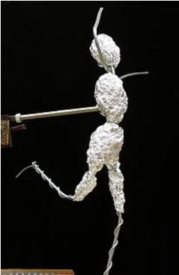
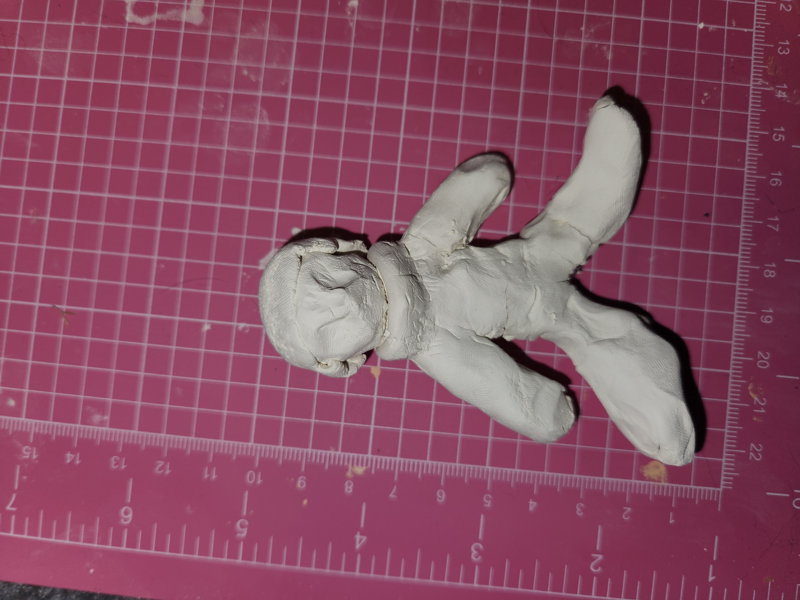
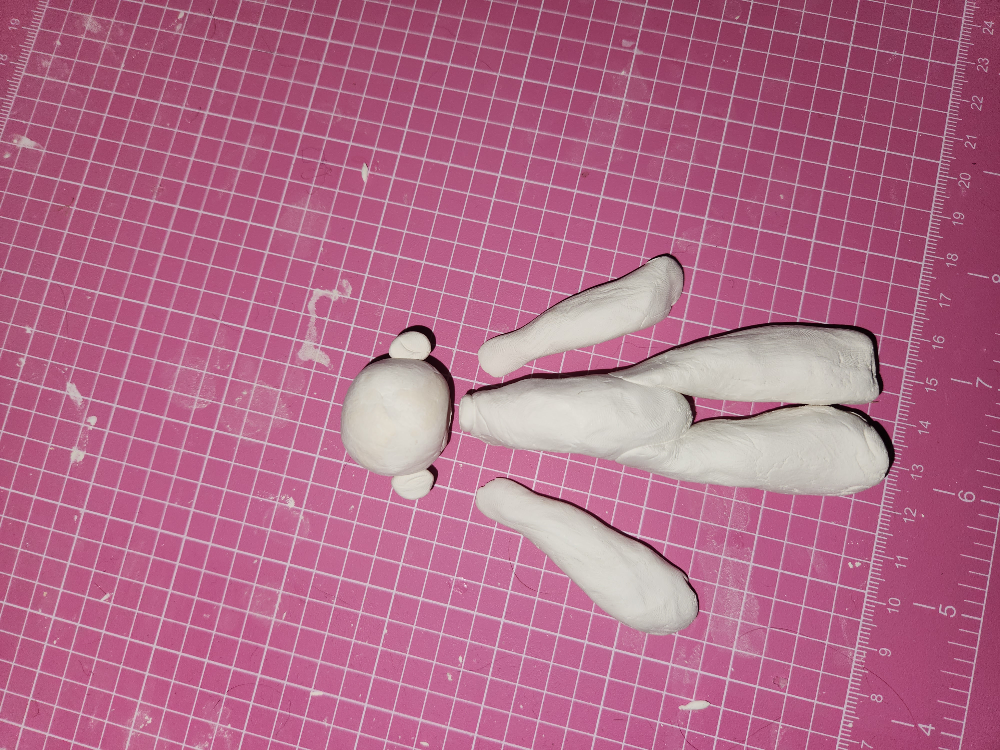

Have you been looking for a new project, scheming to make miniatures of your friends, or simply desiring the knowledge of a fresh, easy medium? Are you hoping to make sculptures or trinkets like the ones you see online, but are too scared to embalm your final product in UV resin? (I certainly was.) If so, you've come to the right place!
To start, there are generally two ways to make a clay sculpture. The first is to simply make your shapes out of clay. The second is to create an armature.
Photo credited to Angela Mia Studios
An armature is basically a skeleton made out of wire and, in this case, aluminum foil. There is wire available that's specifically for making armatures, but any thick wire will work nicely. This step-by-step tutorial by user tysonvw on the Autodesk Instructables site even suggests using the wire from a deconstructed hanger! The overall tutorial is very helpful, and ended up being what I used for my attempt at armature.
The benefits of an armature are that your sculpture will be more structurally sound, you have more time to perfect the pose and build of your sculpture, and the clay will dry faster.
The only con to an armature is that wire can be tricky if it isn't a medium you're used to. My method of creating art has always been very intuitive, admittedly approaching many new mediums with an "if I don't get it right on the first try, I'll never pick it up again" mindset. That being said, here's the result of my attempted armature-based sculpture:
Photo credits to Katie Greenwood
Does it look good? No, don't lie to me, it really doesn't. When crafting your armature it's important to use the aluminum foil to flesh out your sculpture as much as possible. I made the mistake of assuming the clay would do the heavy work, but air-dry clay is very soft, easy to manipulate, but thusly easy to accidentally squish.
If at first you don't succeed, try, try again. I didn't try again due to the aforementioned defeatist mindset and the fact that I was planning to make several sculptures before Christmas. This webpage is here so you can learn from my mistakes, though.
Okay, fine, if you insist on following in my footsteps, here's the result of my simply sculpting several body parts:
Photo credits to Katie Greenwood
Doesn't that look so much better? I'm sure, if yours is looking like this, you're feeling great! Now, all you have to do is glue the parts together and get to decorating!
You would be wrong. As you'll soon find out, air-dry clay is very thirsty. Thirsty for glue.